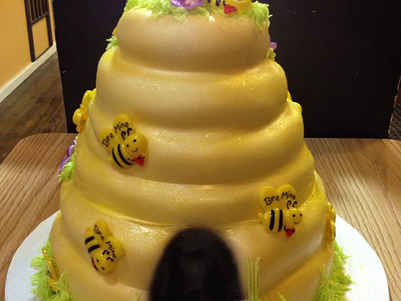
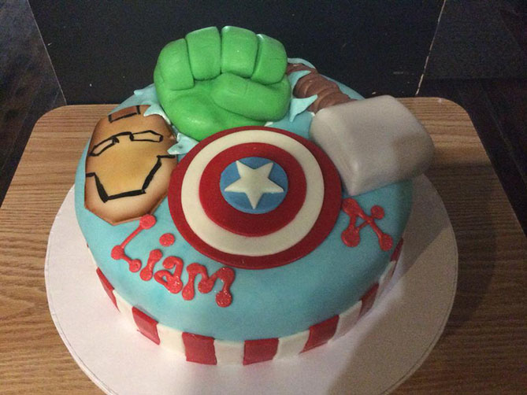
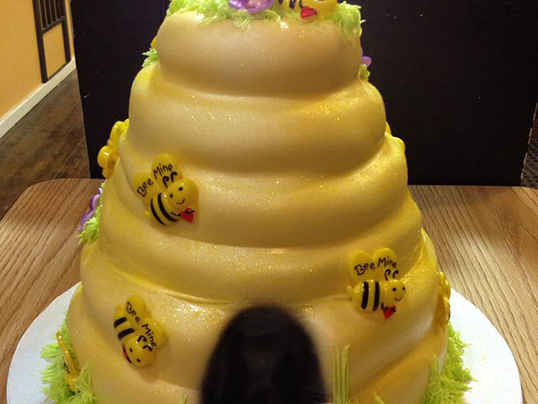
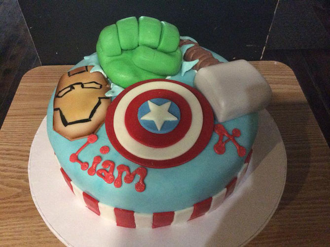

Our Story began on September 19, 1939 as a neighborhood bakery opened in New Albany, Indiana. We started making a small butter cookie that was known as the Little Flower Butter Wafer. It had an icing center and was so soft, it melted in your mouth. Seventy years later this cookie is still made and produced by the same family. These cookies are now known as Rookie’s Cookies, named after the original bakery. The recipe is kept secret and controlled by the family.
Rookies specializes in delicious cakes, pastries, and cookies. We take great pride in our cakes, and use only the freshest finest ingredients available, in order to ensure the best quality. Traditional cakes include our light and moist white, chocolate, yellow, and marble. We are also happy to provide gourmet flavored cakes and delicious fillings at your request. Your cake should be a personal expression of your special day. It can be as simple or as extravagant as your wish. Designs can be from the contemporary to theme-inspired. Rookies can create a delicious cake for any occasion. Whether it be for a Wedding, Birthday, Anniversary, Shower, Religious Holiday, or Graduation, let us create a beautiful cake for your next event. Let your dessert reflect your personal style.